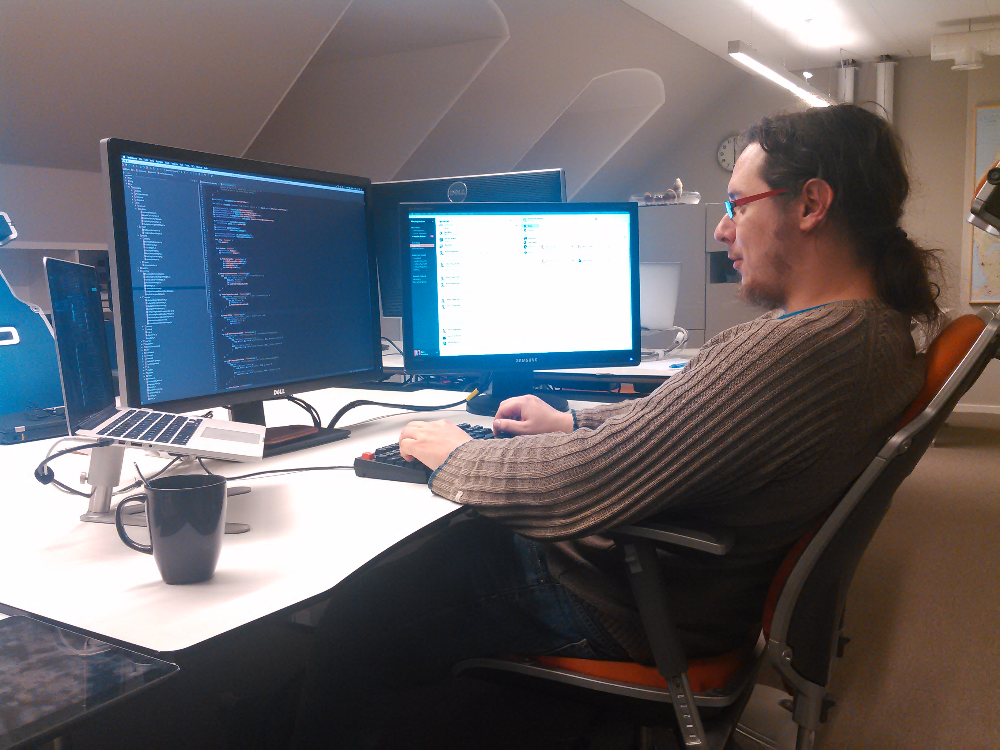
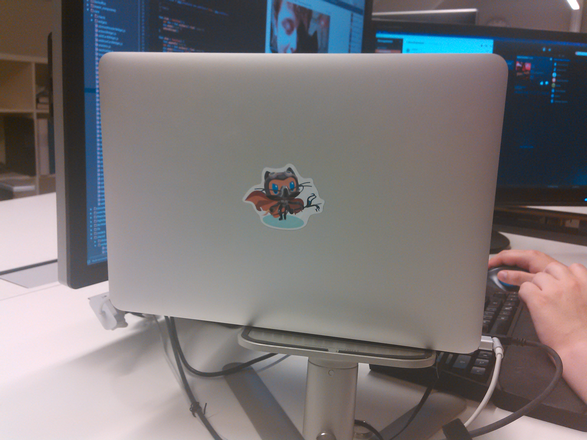
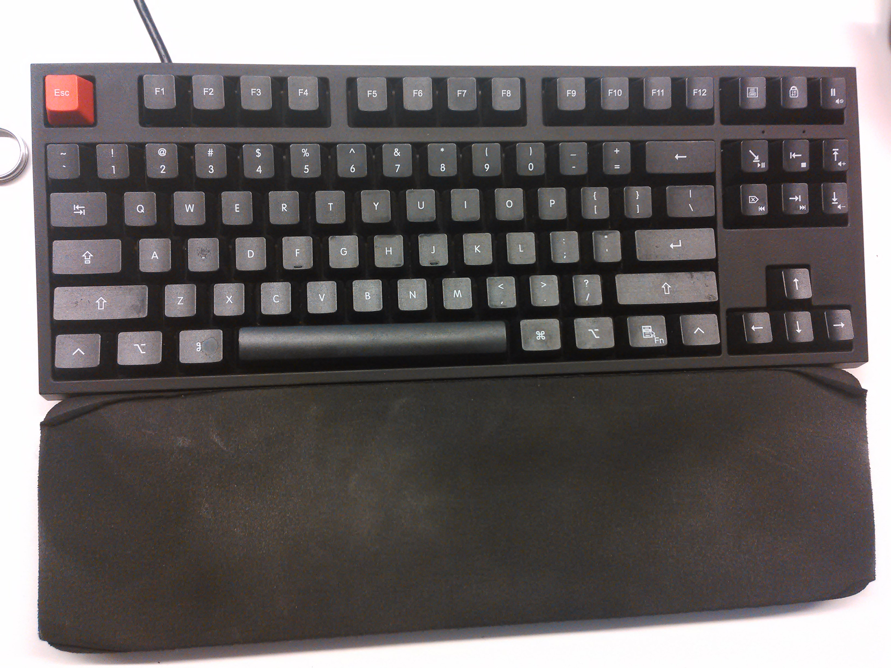
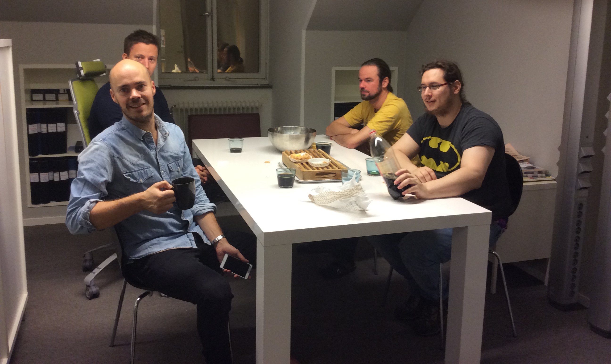

Interview Företagsplatsen #2: Benjamin Van Ryseghem
Interview with Benjamin Van Ryseghem
Four months ago I moved to Stockholm, working full-time at Företagsplatsen as a software engineer. Företagsplatsen (or FTGP for short as we call it) is a really fun IT company to work at, I really enjoy the people and the culture. Just like I did with my previous job at Inria, I decided to do another series of interviews of my colleagues at FTGP.
This is the second post of my series of interviews of my colleagues at FTGP.
Ben joined FTGP almost a year ago. We previously worked together in the RMOD team at Inria. We shared our office with Damien and the three of us had a lot of fun working together.
Ben is a very close friend and a wonderful colleague, always joking around while always being ready to work. We do a lot of pair-programming sessions together, and often meet after work for a beer (those of you who know him know that I would be the one taking a beer, he would always take a coke), and do some coding evenings on free software projects together.

Figure 1: Ben at work
Hi Benjamin, thanks for taking this interview. First things first, could you tell me a bit about yourself?
Really?
Like we did not work together for the last 4 years? ;)
So, I am Ben, 26yo, french and currently living in Stockholm for some months. I am a former Smalltalker, but nowadays more interested by Clojure/ClojureScript.
At work I mainly work on the client part of our application done in Javascript. We are currently redoing the whole UI/UX and I really enjoy this :)
I also spend quite a lot convincing Henrik (our CTO) to use more and more design patterns (like a lot ^^).

Figure 2: Ben's laptop

Figure 3: Ben's keyboard
Can you describe a typical work day at Företagsplatsen?
I always start my day by emptying my email inbox (I am a "0 email inbox” addict), and catching up what happened in the world, and in our codebase.
I usually then spend 30 minutes to one hour to review the open pull requests (it goes with the “catching up” of what happened).
Then depending on when I arrived at the office, either I pick a ticket and start working on it or I plan our 11am meeting. We have a daily meeting at 11am to plan the day, joke a lot and drink a coffee. We try to have it short but it is usually around half an hour.
We then work roughly half an hour and go to eat all together. These days, it’s between burgers and pizzas ;) It’s usually no longer than one hour.
The afternoon is spent killing as many tickets as I can, often pair programming with others. Then I harass Henrik so he reviews my PRs (or “push the green button” as we call it :P)
I try to end the day with a bit a "relaxation coding” by coding a bit on my own projects.
I think this sums it up :)

Figure 4: A swedish fika
What do you do on your free time? (both in front of and away from your computer)
In front of my computer, I like to experiment a lot.
It explains why I have a lot of GitHub projects (most of them are just prototypes). Nowadays I am discovering Clojure and really like it.
When I am away of my computer, I like to read (currently reading again LoTR), I am also a gamer (video games but also tabletop games).
And when my brain is off, I watch series and movies (with a little preferences for grade-Z movies ^^).
And for the days I am not afraid of natural light, I enjoy sharing a drink with friends.
In his interview, Johan has a question for you:
Ben: I would like you to compare Sweden and France on the following 5 questions (better or worse):
- Sweden is …… than France at Ice hockey.
- Swedish hamburgers are ……. tasting than french ones.
- Swedish salaries are ……. than French ones.
- Swedish co-workers are ……. than French ones.
- Swedish girls are ……. looking than French ones.
Answer:
- Sweden is far more lame than France at Ice-hockey (I guess).
- Swedish hamburgers taste more or less the same that french ones.
- Swedish salaries are better than French ones (why would I be here for otherwise :P).
- Swedish co-workers are not as cool as French ones obviously.
- Swedish girls are generally better looking than French ones (as long as you do not tell that to my girlfriend :P).
If you were giving an interview, what question would you ask another member of the team?
What’s the biggest change since you had the (amazing/crazy) idea to hire two frenchies? ;)
Thank you Ben!
comments powered by Disqus